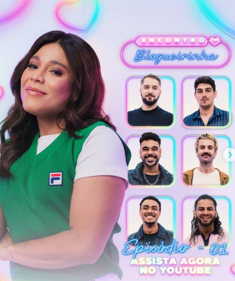

Projeto
Gata Audiovisual
Encontro com a Blogueirinha
Produto audiovisual de entretenimento digital do Encontro com a Blogueirinha. Atuação em produção, participação em entrevista e dinâmicas do programa.
Parceiros: Blogueirinha

Detalhes
- Atuação
- Produção audiovisual, participação como entrevistado e presença nas dinâmicas do programa.
- Contexto
- Projeto vinculado à cultura pop, entrevista, entretenimento para redes e dinâmicas audiovisuais de programa digital.